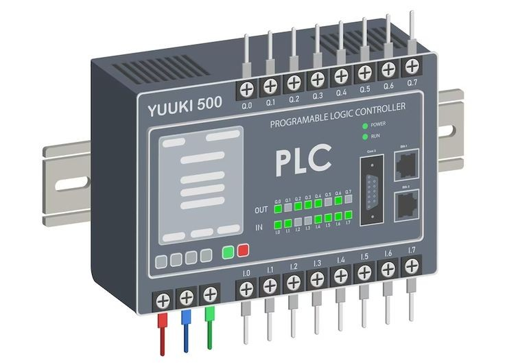
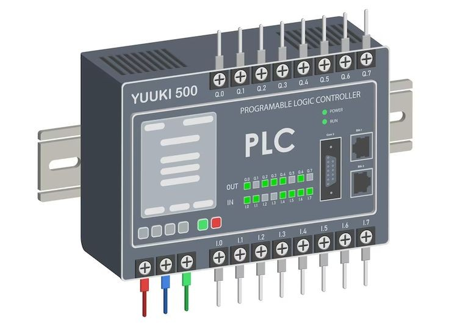

Our
Services
1. Electronic
ESP32-Based Wireless Communication Module
Our ESP32-based Wireless Communication Module is a compact, cost-effective, and powerful solution designed to enable robust wireless connectivity for a wide range of IoT, industrial, and embedded applications.
Key Features:
High-Performance Dual-Core Processor
Powered by the ESP32 SoC featuring dual-core Tensilica LX6 CPUs running at up to 240 MHz, the module provides ample processing power for complex wireless tasks and application logic.
Multiple Wireless Protocols Supported
Wi-Fi 802.11 b/g/n (2.4 GHz) for reliable wireless networking
Bluetooth 4.2 and BLE for short-range communication
This dual-protocol support allows seamless integration into diverse wireless ecosystems.
Low Power Consumption
Designed with multiple sleep modes and dynamic power scaling, the module is ideal for battery-operated and energy-sensitive applications.
Flexible I/O Options
Includes a wide range of GPIOs, UART, SPI, I2C, ADC, DAC, PWM, and more—suitable for interfacing with sensors, actuators, and other peripherals.
Security Features
Integrated hardware encryption (AES, SHA-2, RSA, ECC), secure boot, and flash encryption ensure secure device communication and firmware integrity.
Compact & Modular Design
The module is available in SMT and DIP variants, with antenna options including PCB trace, external antenna, or u.FL connector, allowing easy integration into custom PCBs and development boards.
Ready for Development
Compatible with popular development platforms including ESP-IDF, Arduino, and MicroPython, providing flexibility for prototyping and commercial deployment.
Applications:
Industrial Automation
Smart Home Devices
Wireless Sensor Networks
Wearable Electronics
Remote Monitoring Systems
IoT Gateways and Controllers
Customization Services:
We offer custom firmware development, PCB design, and private labeling services to tailor the ESP32 module to your specific application and brand requirements.
2.Machinery
Egg Washer Machine – Efficient & Hygienic Egg Cleaning Solution
Our Egg Washer Machine is engineered to provide a fast, efficient, and safe way to clean eggs, enhancing product quality and hygiene standards. Ideal for poultry farms, egg processing facilities, and commercial distributors, this machine helps remove dirt, stains, and contaminants from eggs without damaging the shells.
Key Features:
High Efficiency: Capable of washing thousands to three thousands of eggs per hour depending on the model.
Gentle Cleaning: Uses soft brushes and food-grade materials to ensure no cracks or damage to eggshells.
Stainless Steel Body: Durable, rust-resistant design for long-lasting performance and easy maintenance.
Compact & Modular Design: Fits into small production spaces and allows for easy upgrades.
Working Process:
Loading Tray: Eggs are placed on a conveyor or loading tray.
Brushing Station: Rotating soft brushes clean the eggs thoroughly.
Rinse & Disinfection: Eggs pass through a rinse and optional disinfection area.
Benefits:
Increases productivity and reduces labor costs
Ensures food safety and cleanliness
Prevents egg damage and maintains shell integrity
Low water and power consumption
Easy to operate and maintain
Applications:
Poultry Farms
Egg Packaging Centers
Food Processing Units
Retail Egg Suppliers
3.PLC
Siemens PLC Automation Solutions
we provide high-quality industrial automation services using Siemens Programmable Logic Controllers (PLCs). With extensive experience in Siemens systems such as the S7-1200 and S7-1500 series, as well as TIA Portal, we deliver reliable and efficient automation solutions tailored to your operational needs.
Our team is skilled in the design, programming, installation, and commissioning of PLC-based control systems that improve productivity, reduce downtime, and enhance process control. Whether you're upgrading an existing system or implementing a new automation project, we help you get the most out of Siemens PLC technology.
Our Services Include:
Siemens PLC programming and configuration
HMI and SCADA development using Siemens platforms
System integration and troubleshooting
Control panel design and fabrication
On-site installation and support
We are committed to delivering robust, cost-effective automation solutions that meet the demands of modern industry, all while ensuring compatibility with Siemens hardware and software standards.
4.R & D
Research & Development in Electronic Systems
At Zenifytech, innovation drives everything we do. Our Research and Development (R&D) division specializes in cutting-edge electronic systems, offering end-to-end solutions from concept to prototype and beyond. We harness the latest technologies to design, develop, and optimize advanced electronic hardware and embedded systems tailored to meet the unique needs of our clients.
Our Expertise Includes:
Embedded system design and firmware development
PCB design and rapid prototyping
IoT integration and smart device development
Power electronics and control systems
Signal processing and sensor interfacing
System simulation, testing, and validation
Whether you're a startup with a visionary product or an established company seeking innovation, our R&D team collaborates closely to turn ideas into reality with speed, precision, and scalability.
Why Choose Us?
Experienced engineering team
State-of-the-art development tools
Commitment to innovation and confidentiality
Agile development process
Proven track record across multiple industries
Let’s build the future—together.